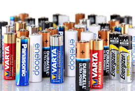

Back to home

What to do with: E-Waste
All e-waste containing batteries (especially lithium
batteries) cannot be disposed of in a normal recycling bin! This is because electronics and fluorescent lights
need special disposal to handle the heavy metals and chemicals inside. They can be dropped off at special
locations or events, or household hazardous waste collection points across the US. Find a local one here:
Household Hazardous Waste Collection Points
Specifics of E-Waste
Batteries
Like we mentioned earlier, batteries cannot simply be tossed in the trash. Instead,
- Try to go to a local recycling center or hazardous waste collection point (linked above).
- Try to see if your batter manufacturer (duracell, energizer, etc.) has a collection point near you! They are found all throughout the US.
- For rechargeable batteries, consider investing in a rechargeable battery charger to reduce the number of disposable batteries used. Please ensure your battery charger fits your battery type.
Wires and Cables
Cables and wires are very easy to dispose of. Your options are to:
- Recycle through electronics recycling programs and e-waste recycling facilities. (linked above)
- Reuse or repurpose the wires throughout your house
- Take a trip to your local best buy or electronics store. They accept most non-hazardous cables
Devices (smartphones,
tablets, etc.)
There are many options when it comes to disposing of your personal devices. Before
anything, ensure you clear all data and log out of all accounts on your device, no matter what. From there, you
can
- Sell or donate the device if in working condition. Gamestop, Best buy, and Goodwill are some great places to start
- Recycle non-functional or obsolete devices through manufacturer programs or e-waste recycling centers.
Printers and Scanners
Printers and Scanners may seem difficult to recycle due to their size and complexity, but
your options are simple!
- If in working condition, try to sell or donate the device. Gamestop, Best buy, and Goodwill are some great places to start
- Otherwise, recycle non-functional devices through designated recycling centers.
- If neither of the above are available, contact the manufacturer of the printer and see if they are accepting rebates or accepting models of that printer/scanner to be sent to facilities.
TVs and Monitors
LCD and CRT screens are different from regular devices, but the options remain similar.
If possible, please consider
- Selling or donating the device if in working condition. Gamestop, Best buy, and Goodwill are some great places to start.
- If not in working condition, look for e-waste collection events or facilities that accept them (linked above)